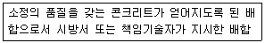

콘크리트기능사 (2008-02-03 기출문제)
1과목: 콘크리트재료
1. 중용열 포틀랜드 시멘트에 대한 설명으로 틀린 것은?
- 규산이석회가 비교적 많다.
- 한중콘크리트 시공에 적합하다.
- 수화열이 낮아 댐,터널공사에 적합하다.
- 조기 강도는 작고 장기 강도가 크다.
(정답률: 51%)

2. 체가름 시험결과 잔골재 조립률이 2.68, 굵은 골재의 조립률이 7.39이고, 그 비율이 1:1.9라면 혼합골재 조립률은 얼마인가?
- 3.76
- 4.77
- 5.77
- 6.76
(정답률: 59%)
3. 재료에 일정하중이 작용하면 시간의 경과와 함께 변형이 증가하는데 이러한 현상을 무엇이라 하는가?
- 포와송비
- 크리프
- 연성
- 취성
(정답률: 84%)
4. 천연산의 것과 인공산의 것이 있으며 콘크리트의 워커빌리티를 좋게 하고 수밀성과 내구성 등을 크게할 목적으로 사용되는 혼화재료는?
- 완결제
- 포졸란
- 촉진제
- 증량제
(정답률: 76%)
5. 콘크리트에 A.E제를 혼합하는 주된 목적으로 옳은것은?
- 콘크리트의 강도를 높인다.
- 콘크리트의 단위 중량을 높인다.
- 시멘트를 절약한다.
- 동결융해에 대한 저항성을 높인다.
(정답률: 77%)
6. 보크사이트와 석회석을 혼합하여 만든 것으로 재령 1일에서 보통 포틀랜드 시멘트의 재령 28일의 강도를 내는 시멘트는?
- 알루미나 시멘트
- 플라이애시 시멘트
- 고로 슬래그 시멘트
- 포틀랜드 포졸란 시멘트
(정답률: 70%)
7. 시멘트 분말도는 무엇으로 나타내는가?
- 단위 무게
- 비표면적
- 단위 부피
- 표건비중
(정답률: 81%)
8. 분말도가 높은 시멘트에 관한 설명으로 옳은 것은?
- 콘크리트에 균열이 생기기 쉽다.
- 수화열 발생이 적다.
- 시멘트 풍화속도가 느리다.
- 콘크리트의 수화작용 속도가 느리다.
(정답률: 78%)
9. 굵은 골재의 연한 석편 함유량의 한도는 최대값을 몇%(질량백분율)로 규정하고 있는가?
- 3%
- 5%
- 10%
- 13%
(정답률: 59%)
10. 실적률이 큰 값을 갖는 골재를 사용한 콘크리트에 대한 설명으로 틀린 것은?
- 콘크리트의 밀도가 증대된다.
- 콘크리트의 수밀성이 증대된다.
- 콘크리트의 내구성이 증대된다.
- 건조수축이 크고 균열발생의 위험이 증대된다.
(정답률: 71%)
11. 혼화재 중 용광로에서 나오는 슬래그를 급냉시켜 만든 가루는?
- 포촐라나(pozzolana)
- 플라이애시(fly ash)
- 고로 슬래그 미분말
- AE제
(정답률: 84%)
12. 콘크리트의 강도 중에서 가장 큰 값을 갖는 것은?
- 인장강도
- 압축강도
- 휨강도
- 비틀림강도
(정답률: 90%)
13. 잔골재의 유해물 함유량의 한도중 점토덩어리 함유량의 최대치는 질량백분율로 얼마인가?
- 0.2%
- 0.6%
- 0.8%
- 1.0%
(정답률: 58%)
14. 다음 설명 중 시멘트의 저장방법으로 부적당한 것은?
- 시멘트 포대가 넘어지지 않도록 벽에 붙여서 쌓아야 한다.
- 지상에서 30cm 이상되는 마루에 저장하여야 한다.
- 저장기간이 길어질 우려가 있는 경우에는 7포이상 쌓아 올리지 않도록 하여야 한다.
- 방습적인 구조로 된 사일로 또는 창고에 품종별로 구분하여 저장하여야 한다.
(정답률: 66%)
15. 골재가 갖추어야 할 성질 중 틀린 것은?
- 단단하고 내구적일 것
- 마모에 대한 저항성이 클 것
- 모양이 얇고, 가늘고 긴조각일것
- 알맞은 입도를 가질것
(정답률: 87%)
16. 운반거리가 먼 레미콘이나 무더운 여름철 콘크리트의 시공에 사용하는 혼화제는 어느 것인가?
- 감수제
- 지연제
- 방수제
- 경화 촉진제
(정답률: 94%)
17. 혼화재료 중 사용량이 비교적 많아서 콘크리트의 배합 계산에 관계되는 것은?
- 포졸리스
- 플라이애시
- 염화칼슘
- 경화촉진제
(정답률: 79%)
18. 표면건조 포화상태의 잔골재 500g을 노건조시켰더니 480g이었다면 흡수율은 얼마인가?
- 4.00%
- 4.17%
- 4.76%
- 5.00%
(정답률: 58%)
19. 중용열 포틀랜드 시멘트보다 더 수화열을 적게 한 시멘트는?
- 고로 슬래그 시멘트
- 백색 포틀랜드 시멘트
- 내황산염 포틀랜드 시멘트
- 저열 포틀랜드 시멘트
(정답률: 78%)
20. 시멘트의 종류 중 혼합 시멘트는?
- 조강 포틀랜드 시멘트
- 알루미나 시멘트
- 고로 슬래그 시멘트
- 팽창 시멘트
(정답률: 57%)
2과목: 콘크리트시공
21. 콘크리트 공사에서 거푸집 떼어내기에 관한 설명으로 틀린 것은?
- 거푸집은 콘크리트가 자중 및 시공 중에 가해지는 하중에 충분히 견딜만한 강도를 가질 때까지 해체해서는 안된다.
- 거푸집을 떼어내는 순서는 비교적 하중을 받지 않는 부분을 먼저 떼어낸다.
- 연직 부재의 거푸집은 수평부재의 거푸집보다 먼저 떼어낸다.
- 보의 밑판으 거푸집은 보의 양측면의 거푸집보다 먼저 떼어낸다.
(정답률: 68%)
22. 다음중 배치믹서(batch mixer)에 대한 설명으로 가장 적합한 것은?
- 콘크리트 재료를 1회분씩 혼합하는 기계
- 콘크리트 재료를 1회분씩 계량하는 기계
- 콘크리트를 혼합하면서 운반하는 트럭
- 콘크리트를 1m3씩 혼합하는 기계
(정답률: 72%)
23. 다음중 콘크리트 다짐 기계가 아닌 것은?
- 내부진동기
- 싱커
- 표면진동기
- 거푸집진동기
(정답률: 83%)
24. 뿜어 붙이기 콘크리트에 관한 다음 내용 중 잘못된 것은?
- 시멘트 건(gun)에 의해 압축공기로 모르타르를 뿜어 붙이는 것이다.
- 수축균열이 생기기 쉽다.
- 공사기간이 길어진다.
- 건식공법의 경우 시공중 분진이 많이 발생한다.
(정답률: 72%)
25. 레디믹스트 콘크리트의 장점이 아닌 것은?
- 균질의 콘크리트를 얻을 수 있다.
- 공사능률이 향상 되고 공기를 단축할 수 있다.
- 콘크리트의 워커빌리티를 현장에서 즉시 조절할 수있다.
- 콘크리트 치기와 양생에만 전념할 수 있다.
(정답률: 67%)
26. 단위 잔골재량의 절대부피 0.266m3 잔골재의 비중 2.60일 때 단위 잔골재량은 약 몇 kg/m3 인가?
- 692
- 962
- 296
- 726
(정답률: 53%)
27. 다음 중 배합 설계에서 고려하여야 하는 사항으로 거리가 먼 것은?
- 물-시멘트비의 결정
- 배합 강도의 결정
- 굵은 골재의 최대치수
- 항복 강도의 결정
(정답률: 63%)
28. 콘크리트 운반시 주의 사항으로 잘못된 것은?
- 운반도중 재료 분리가 일어나지 않아야 한다.
- 운반도중 슬럼프가 줄어들지 않도록 해야 한다.
- 콘크리트 운반시에는 공사의 종류,규모,기간 등을 고려하여 운반 방법을 선정한다.
- 콘크리트 운반로를 결정할 때 경제성을 고려하지 않아도 된다.
(정답률: 87%)
29. 다음 중 콘크리트용 잔골재와 굵은골재로 분류할 때 기준이 되는 체는?
- 1.2mm
- 2.5mm
- 5mm
- 10mm
(정답률: 90%)
30. 시방배합에서 규정된 배합의 표시법에 포함되지 않은 것은?
- 물-시멘트비
- 잔골재의 최대치수
- 물,시멘트,골재의 단위량
- 슬럼프의 범위
(정답률: 62%)
31. 콘크리트의 습윤양생 방법이 아닌 것은?
- 수중양생
- 습포양생
- 습사양생
- 촉진양생
(정답률: 72%)
32. 콘크리트 비비기는 미리 정해 둔 비비기 시간의 최소 몇배 이상 계속해서는 안 되는가?
- 2배
- 3배
- 4배
- 5배
(정답률: 79%)
33. 비빈 콘크리트를 수송관을 통해 압력으로 치기 할 장소까지 연속적으로 보내는 기계는?
- 콘크리트 펌프
- 콘크리트 믹서
- 트럭믹서
- 콘크리트 플랜트
(정답률: 76%)
34. 굳지않은 콘크리트 또는 모르타르에서 물이 분리되어 상승하는 현상을 무엇이라 하는가?
- 워커빌리티(Workability)
- 연경도(Consistency)
- 레이턴스(Laitance)
- 블리딩(Bleeding)
(정답률: 83%)
35. 콘크리트 시방배합설계의 기준으로서 골재는 어느 상태의 골재를 사용하는가?
- 절대 건조 상태
- 습윤상태
- 공기중 건조 상태
- 표면 건조 포화 상태
(정답률: 67%)
36. 일반적인 경량골재 콘크리트란 콘크리트의 기건 단위 무게가 얼마 정도인 것을 말하는가?
- 0.5 ~ 1.0t/m3
- 1.4 ~ 2.0t/m3
- 2.1 ~ 2.7t/m3
- 2.8 ~ 3.5t/m3
(정답률: 47%)
37. 일반적으로 하루의 평균기온이 최대 몇 ℃이하가 되는 기상조건에서 한중콘크리트로서 시공하는가?
- 10℃ 이하
- 8℃ 이하
- 4℃ 이하
- 0℃ 이하
(정답률: 84%)
38. 수중 콘크리에서 물-시멘트비는 50%이하 단위 시멘트량은 370kg/m3 이상, 잔골재율은 얼마를 표준으로 하는가?
- 10 ~ 25%
- 20 ~ 35%
- 40 ~ 45%
- 50 ~55%
(정답률: 39%)
39. 기온 30℃ 이상의 온도에서 콘크리트를 타설할 때 나타나는 현상으로 옳지 않는 것은?
- 소요수량의 증가
- 수송중 슬럼프(Slump)증대
- 타설 후 빠른응결
- 수화열에 의한 온도상승 증가
(정답률: 46%)
40. 콘크리트를 친 후 일정 기간까지 굳기에 필요한 온도,습도를 주고, 해로운 작용을 받지 않도록 해야 한다. 이러한 작업을 무엇이라 하는가?
- 치기
- 양생
- 다지기
- 시공 이음
(정답률: 83%)
3과목: 콘크리트 재료시험
41. 압축강도시험용 공시체의 양생 온도로 가장 적당한 것은?
- 13±2℃
- 15±2℃
- 20±2℃
- 25±2℃
(정답률: 79%)
42. 슬럼프 시험에 대한 설명으로 옳은 것은?
- 콘크리트의 물-시멘트의 비를 측정하는 시험이다.
- 굳지 않은 콘크리트의 반죽질기 정도를 측정하는 시험이다.
- 굳지 않은 콘크리트속의 공기량을 측정하는 시험이다.
- 재료의 혼합 정도를 측정하는 시험이다.
(정답률: 76%)
43. 시방배합표에서 단위수량이 167kg/m3 ,단위시멘트량이 314kg/m3 , 갇힌공기량이 1.3% 일때 단위 골재량의 절대 부피는 얼마인가?(단, 시멘트의 비중은 3.14임)
- 0.66m3
- 0.69m3
- 0.72m3
- 0.75m3
(정답률: 51%)
44. 콘크리트 압축강도를 추정하기 위한 비파괴시험기는 다음 중 어느것인가?
- 슈미트해머
- 비카침
- 블레인 공기투과장치
- 길모어침
(정답률: 76%)
45. 지간길이 ℓ인 3등분 하중장치를 이용한 콘크리트 휨강도 시험에서 폭 b, 높이 d인 공시체가 지간의 3등분 중앙부에서 파괴되었을때 휨강도를 구하는 공식은? (단, P=파괴시 최대 하중임)
- Pℓ/bd2
- Pℓ/2bd2
- 2Pℓ/3bd2
- 3Pℓ/2bd2
(정답률: 57%)
46. 콘크리트를 친 후 비중 차이로 시멘트와 골재알이 가라 앉으며 물이 올라와 콘크리트의 표면에 가라앉은 작은 물질을 무엇이라 하는가?
- 슬럼프
- 레이턴스
- 워커빌리티
- 반죽질기
(정답률: 83%)
47. 콘크리트 원주 시험체를 할렬시켜 인장강도를 구하고자 할때 시험공시체의 지름은 굵은골재 최대 치수의 최소 몇배 이상이어야 하는가?
- 4/3배
- 3배
- 4배
- 5배
(정답률: 59%)
48. 콘크리트 블리딩 시험(KS F 2414)를 적용할 수 있는 굵은 골재 최대치수는?
- 50mm
- 60mm
- 70mm
- 80mm
(정답률: 57%)
49. 골재의 조립률 측정을 위해 사용되는 체가 아닌 것은?
- 40mm
- 30mm
- 20mm
- 10mm
(정답률: 75%)
50. 콘크리트 슬럼프(slump)시험에 있어서 각층 마다 다짐봉으로 몇 회 다짐을 원칙으로 하는가?
- 15회
- 20회
- 25회
- 30회
(정답률: 88%)
51. 콘크리트의 인장강도는 압축강도의 얼마 정도인가?
- 1/2
- 1/4
- 1/6
- 1/10
(정답률: 58%)
52. 다음 표에서 설명하고 있는 배합을 무슨 배합이라고 하는가?

- 현장배합
- 강도배합
- 골재배합
- 시방배합
(정답률: 90%)
53. 단위수량이 154kg/m3일때 물-시멘트(W/C) 50%의 콘크리트 1m3 을 만드는데 필요한 단위 시멘트량은 얼마인가?
- 308kg/m3
- 154kg/m3
- 77kg/m3
- 462kg/m3
(정답률: 50%)
54. 잔골재의 비중시험에 사용하지 않는 기계 기구는?
- 르샤틀리에 비중병
- 시료분취기
- 저울
- 원추형 몰드
(정답률: 43%)
55. 골재의 체가름 시험을 하여 알 수 있는 것은?
- 마모량
- 풍화도
- 골재의 모양
- 조립률
(정답률: 75%)
56. 콘크리트의 휨강도 시험에 관한 사항 중 옳지 않은 것은?
- 휨강도 시험은 단순보의 3등분점 재하법을 주로 사용한다.
- 휨강도 시험용 공시체를 제작할 때 콘크리트를 3층으로 나누어 채우고 각 층의 윗면을 다짐봉으로 다진다.
- 휨강도 시험용 공시체는 몰드를 떼어낸 후, 습윤상태에서 강도시험을 할 때까지 양생하여야 한다.
- 휨강도 시험시 공시체가 인장쪽 표면의 지간 방향 중심선의 3등분점의 바깥쪽에서 파괴된 경우는 그 시험 결과를 무효로 한다.
(정답률: 41%)
57. 굳지 않은 콘크리트의 공기량 시험법과 거리가 먼 것은?
- 밀도법
- 공기실 압력법
- 무게법
- 부피법
(정답률: 50%)
58. 콘크리트 공기량 시험에서 겉보기 공기량이 5.4%이고 골재의 수정 계수가 2.3%일때 압축강도는 약 얼마인가?
- 2.3%
- 12.4%
- 3.1%
- 7.7%
(정답률: 64%)
59. 콘크리트 압축강도 시험에서 몰드 지름 15cm인 공시체의 파괴 강도가 52.3t 일때 압축강도는 약 얼마인가?
- 296kg/cm2
- 272kg/cm2
- 258kg/cm2
- 236kg/cm2
(정답률: 49%)
60. 다음은 콘크리트 배합 설계에 대한 내용이다. 잘못 나타낸것은?
- 물-시멘트비는 물과 시멘트의 질량비를 말한다.
- 콘크리트 1m3 을 만드는데 쓰이는 각 재료량을 단위량이라고 한다.
- 배합강도는 콘크리트 배합을 정하는 경우에 목표로 하는 압축강도이다.
- 잔골재율은 잔골재량의 전체 골재에 대한 질량비를 말한다.
(정답률: 45%)
한중콘크리트는 높은 강도와 내구성이 요구되는 구조물에 사용되는 콘크리트입니다. 이를 위해서는 높은 조기 강도가 필요합니다. 하지만 중용열 포틀랜드 시멘트는 조기 강도가 작고, 장기 강도가 큰 특징을 가지고 있기 때문에 한중콘크리트 시공에는 적합하지 않습니다.